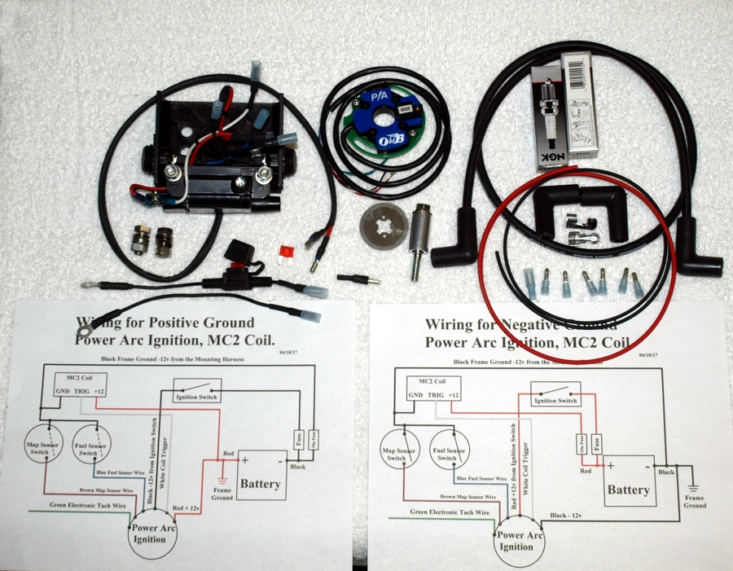
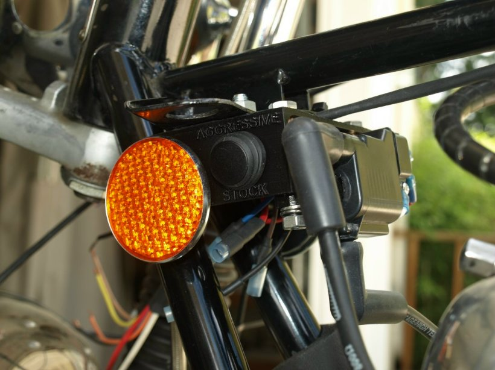
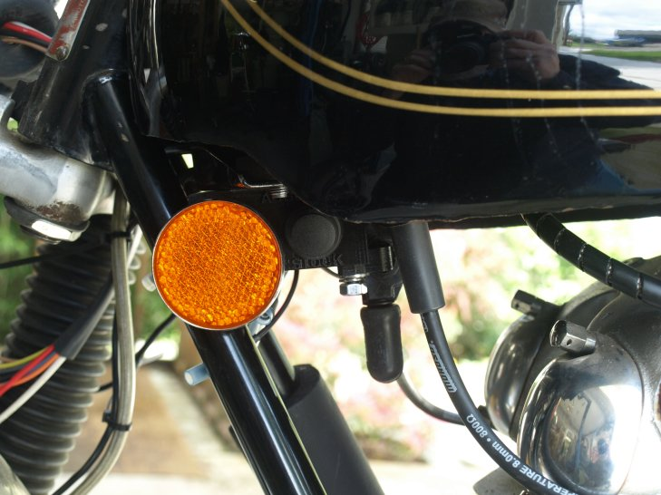

Old Britts has been selling the Power Arc ignitions for a number of years with well over 400 running on Norton Comandos. We have been very pleased with this ignition and Power Arc has just made it even better:
Some of the general features are:
- No external module. The complete unit fits in the points compartment.
- Low voltage operation. This ignition will work down to 6 volts. This is extremely important for electric start Commandos.
- Sparks three times each compression stroke. This provides a very efficient and clean running engine.
- Very easy to install. No need to run the engine up to 5000rpm to time the ignition. Just find top dead center (TDC), rotate the stainless encoder disc until the static LED timing light comes on, lock the disc down and you are done.
- Has a precision rev limiter built into the module. Old Britts pre-sets this to 6800rpm, but can be set to whatever the customer desires when ordering.
- Four switchable advance curves (maps) are available with each unit.
- Automatic coil safety shutoff.
- Will run with a positive or negative ground system.
- Uses less energy than points.
- Has an electronic tachometer output.
- Programmable.
- Made in the USA.
The new Power Arc ignition is different than the original Power Arc ignition that Old Britts previously sold. It is an improved version of the original ignition, but can be wired to perform exactly like the original version. The improved features of the new Power Arc ignition are:
- Four advance maps compared to two maps on the original ignition.
- Old Britts has set up two maps for regular fuel and two maps for premium fuel. We will refer to the four maps as two sets of maps, one set for regular fuel and one set for premium fuel. Each set of maps has one map with a stock advance curve and the other map is an aggressive advance curve. We have developed a set of two waterproof round rocker button switches along with a wiring harness for easy installation. One switch will control the type of fuel being used. The other switch will control the type of the advance curve. If our new mounting bracket and switches are not what you desire, the ignition can be set up with bullet connectors for full functionality.
- The original ignition was programmable; however the ignition had to be removed from the bike to connect the programming cable, unless the extended programming connection was purchased separately. The new ignition has a programming connection that the programming cable can be connected to while the ignition is in the bike.
- The separate black cable added to the original ignitions, to allow positive ground electrical systems, is no longer required. The new ignitions have all the wires in the one wire loom to accommodate positive or negative ground electrical systems. This makes wiring less confusing since all six wires in the wire loom are different colors.
- A new improved coil is available that is much more efficient, mounts to our new mounting bracket nicely and is triggered more efficiently.
What is included with the complete Power Arc Commando Ignition with MC2 Coil (51-150200)

This system comes with everything required to install along with a mounting bracket, pre-wired with two waterproof rocker switches, that replaces the existing coil mounting bracket (06-2577). We print the coil bracket out of ABS plastic in order to keep the cost down, and ABS is plenty strong for the much lighter coil.


Since you must run resistor spark plug wires and spark plugs, we recommend our complete Power Arc ignition system that contains everything you will need to convert to this ignition. Prices for this complete system and the individual components are:
This system come with complete installation instructions. If you are interested in the installation instructions we can E-mail you a PDF file for the desired system.
This page was written and designed by F. H. Eaton & Associates if you have any questions or comments please contact us at info@fheaton.com